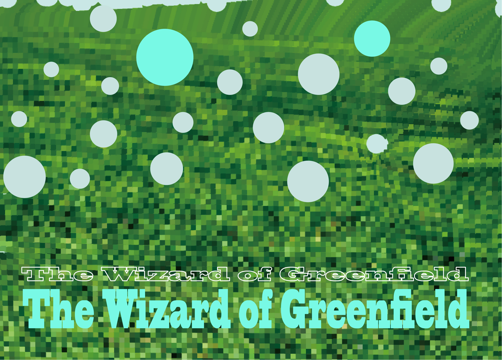
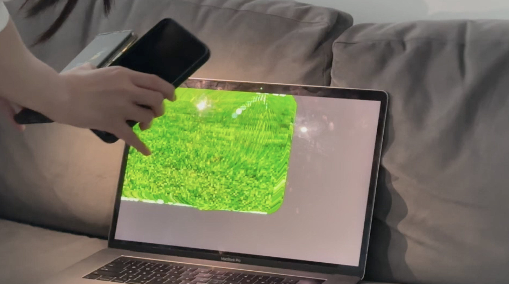

Inspiration
In a natural environment, plants change and grow with photosynthesis and respiration, and the light from the sun, so I decided to use light to change the visuals. I was inspired by a book, Art Forms in Nature: Prints of Ernst Haeckel, in which Ernst Haeckel continually looks at nature and captures the natural forms of plants in geometric form. The basic concept of the "unity of all living things, plants" allows for the juxtaposition of the initial microscopic organisms with the highly developed flora and fauna, arranged geometrically and "tectonically", recording the world as it is in its most diverse forms, which has been recognised by artists and architects alike. This has been recognised by artists and architects alike. There is a Chinese poem that says: "The wind blows the grass and the sheep and cattle are seen", which means that the grassland beneath the blue sky of the pasture rolls in green waves and when the wind blows through the grass, herds of sheep and cattle appear and disappear. This poem inspired me to interact with the light source to achieve the change of plants in the image.
Video from this, Please click on the link Vimeo
image
 .............